Chapter 7 표본분포
7.1 확률표본
통계학의 근본 목적은 모집단에서 추출된 표본에서 얻어진 정보를 기초로하여 모집단에 대하여 추론(inference)을 하는 것
모집단에 대한 결정을 내리거나 추론을 위해 표본에서 표본통계량(sample statistic)을 계산
표본통계량 또한 확률변수이며, 표본통계량의 확률분포를 표본분포라 함
전체가 아닌 부분인 표본을 이용하여 모집단의 특성을 파악하고자 한다면, 어느 정도의 오차(error)가 발생
표본과 모집단 사이에 확률개념을 사용하면, 이러한 오차를 최소화하여 보다 바람직한 통계분석의 결과를 기대할 수 있음
자료를 수집하기 위해 표본을 추출하는 방법 중 가장 간단하고 이상적인 방법은 무작위추출(random sampling)
무작위 추출법으로 표본을 추출할 때는 난수표를 사용하거나 제비뽑기 또는 컴퓨터를 활용한 추출법을 사용
확률추출에 의해 선택된 관측값으로 이루어진 표본을 확률표본(random sample)이라고 하며, 표본 상호 간은 독립이며 동일한 확률분포를 따름
관측값 하나하나가 추출될 확률이 동일한 이산형 균일분포로부터 독립적으로 추출하는 것을 무작위추출이라고 함
무작위추출에 의해 추출된 \(n\)개의 관측값 \(X_1, X_2 , \ldots , X_n\)은 서로 독립이고, 각 관측값 \(X_i\)의 분포는 모집단의 분포 \(f(x)\)와 같다. \[f(x_1)=f(x_2)=\cdots =f(x_n )=f(x)\] 즉, 각 관측값은 동일한 모평균 \(\mu\)와 모분산 \(\sigma^2\)을 가진다.
확률표본 \(X_1, X_2 , \ldots , X_n\)이 상호 독립적(independent)이며 동일한 분포(identically distributed)를 따를 때 이를 크기 \(n\)인 확률표본(random sample)이라고 한다.
확률변수의 분포에 관한 정보를 얻기 위해 우리는 동일한 상황에서 실험을 \(n\)번 반복. 확률변수 \(X_i\), \(i=1,\ldots, n\)가 \(i\)번째 관측을 나타내면 \(X_1, \ldots, X_n\)은 관심 있는 분포로부터의 확률표본임
실험을 하면 \(X_1=x_1, \cdots , X_n =x_n\)은 알려진 상수이며, 이 상수를 이용하여 모르는 모수를 추론
7.2 표본평균의 표본분포
이 절에서는 표본에서 구한 표본통계량인 표본평균 \(\bar{X}\)를 이용하여 모평균 \(\mu\)를 추론하는데 필요한 표본평균의 성격을 파악
모집단으로부터 무작위추출에 의해 \(n\)개의 관측값을 선택한다면 표본평균은 다음과 같이 정의 \[\bar{X}=\frac{1}{n} (X_1+X_2+\cdots+X_n)\]
표본평균 \(\bar{X}\)는 확률변수 \(X_1, X_2 , \ldots, X_n\)의 선형결합으로 이루어져 있으므로 \(\bar{X}\) 또한 확률변수임
확률표본 \(X_1, X_2 , \ldots , X_n\)이 평균 \(\mu\), 분산 \(\sigma^2\)인 모집단으로부터 무작위 추출되었다면 표본평균 \(\bar{X}\)의 평균과 분산은 다음과 같다. \[E(\bar{X})=\mu, \hskip10pt Var(\bar{X})=\frac{\sigma^2}{n}\]
(증명) 표본평균 \(\bar{X}\)의 평균은 다음과 같이 정리된다. \[E(\bar{X})=E[\frac{1}{n}(X_1+X_2+\cdots+X_n)]=\frac{1}{n}[E(X_1)+E(X_2)+\cdots +E(X_n )]\]
정의에 의해 각각의 관측값 \(X_i\)는 모평균이 \(\mu\)인 모집단의 분포를 따르므로 \(E(X_1)=E(X_1)=\cdots =\mu\)이다. 따라서 \(E(\bar{X})\)는 다음과 같다. \[E(\bar{X})=\frac{1}{n}(\mu +\mu +\cdots +\mu)=\frac{1}{n}(n\mu)=\mu\]
마찬가지로 관측값 \(X_1 , X_2 , \ldots, X_n\)이 상호 독립이므로 표본평균 \(\bar{X}\)의 분산은 다음과 같다. \[\begin{aligned} Var(\bar{X})&=Var[\frac{1}{n}(X_1+X_2+\cdots +X_n)]\\ &=\frac{1}{n^2}[Var(X_1)+Var(X_2)+\cdots +Var(X_n)]\\ &=\frac{1}{n^2}(\sigma^2+\sigma^2+\cdots +\sigma^2)=\frac{1}{n^2}(n\sigma^2)=\frac{\sigma^2}{n}\end{aligned}\]
통계량을 이용하여 모수를 추론하는 과정을 추정(estimation)이라고 하고 추정하는데 필요한 통계량을 추정량(estimator)이라 함
추정단계에서 발생하는 오차를 추정오차(error of estimation)라고 하고 이는 추정량에 관한 표본분포의 표준편차인 표준오차(standard error: s.e)를 통해 얻어짐
표본평균 \(\bar{X}\)의 표준편차는 \(\sigma/\sqrt{n}\)이고 \(\bar{X}\)가 모평균 \(\mu\)에서 떨어져 있는 정도를 나타냄. 즉, \(\sigma/\sqrt{n}\)는 표본평균 \(\bar{X}\)의 표준오차이고 이는 표본평균을 이용하여 모평균을 추정하는데 발생하는 추정오차를 나타냄
\(\bar{X}\)의 표준오차 \[\sigma(\bar{X})=\frac{\sigma}{\sqrt{n}} \hskip5pt \text{또는} \hskip5pt s.e(\bar{X})=\frac{\sigma}{\sqrt{n}}\]
\(\sigma=1\)인 경우 표본크기에 따른 표준오차 \(\sigma(\bar{X})\)
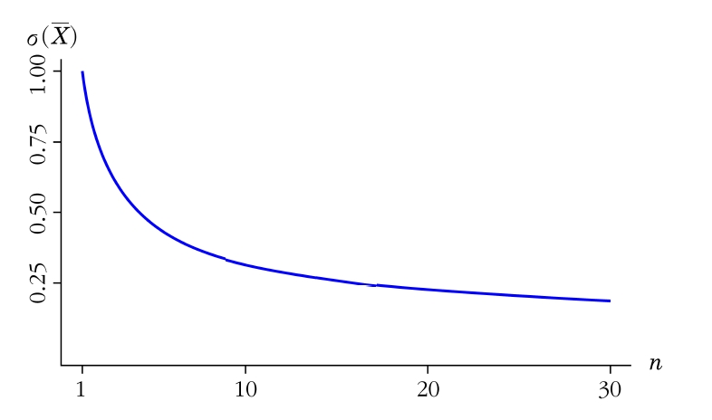
평균이 5이고 분산이 16인 모집단으로부터 무작위로 25개의 표본을 추출하였다면 표본평균 \(\bar{X}\)의 평균과 분산을 구하고 표준오차를 구하라.
(풀이)
\(n=25\)이고 모평균 \(\mu=5\), 모분산 \(\sigma^2=16\)이므로 \(\bar{X}\)의 평균, 분산, 표준오차는 다음과 같다. \[E(\bar{X})=\mu=5, \hskip10pt Var(\bar{X})=\frac{\sigma^2}{5}=\frac{16}{25}, \hskip10pt \sigma(\bar{X})=\frac{\sigma}{\sqrt{n}}=\frac{4}{5}\]
모집단의 확률분포가 아래와 같다고 하자.
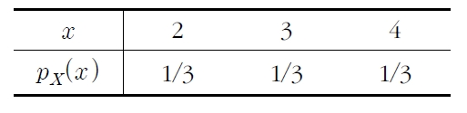
a) 모집단 분포의 평균 \(\mu\)와 분산 \(\sigma^2\)을 계산하라.
b) \(n=2\)인 표본을 무작위 복원추출한다고 할 때 표본평균의 분포를 구하라.
c) b)에서의 표본평균의 평균, 분산을 구한 후 모집단의 평균, 분산과 비교하라.
d) \(n=2\)인 표본을 무작위 비복원추출한다고 할 때 표본평균의 평균을 구하여 c)에서 구한 표본평균의 평균과 비교하라.
(풀이) a) \(\mu=\sum_xxp(x)=2\frac{1}{3}+3\frac{1}{3}+4\frac{1}{3}=3\)
\[\sigma^2=\sum_x(x-\mu)^2p(x)=1\frac{1}{3}+0\frac{1}{3}+1\frac{1}{3}=\frac{2}{3}\]
유한 모집단에서 \(n=2\)인 표본추출
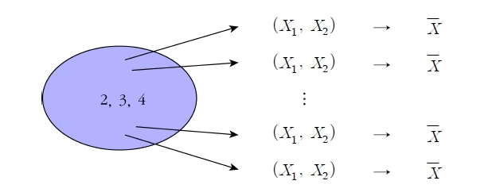
\(n=2\)인 복원추출 결과
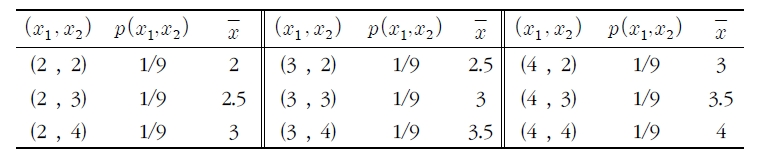
b) 복원추출인 경우 표본평균 \(\bar{X}\)의 표본분포
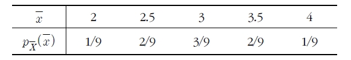
c) 표본평균의 분포를 이용하여 \(\bar{X}\)의 평균과 분산을 구하면 다음과 같다. \[E(\bar{X})=2\frac{1}{9}+2.5\frac{2}{9}+3\frac{3}{9}+3.5\frac{2}{9}+4\frac{1}{9}=3\] \[Var(\bar{X})=(2-3)^2\frac{1}{9}+(2.5-3)^2\frac{2}{9}+\cdots +(4-3)^2\frac{1}{9}=\frac{1}{3}\]
이를 모집단의 평균, 분산과 비교해보면, \[E(\bar{X})=3=\mu, \hskip10pt Var(\bar{X})=\frac{\sigma^2}{n}=\frac{2/3}{2}=\frac{1}{3}\]
d) \(n=2\)인 표본을 비복원추출하므로 모든 가능한 표본의 수는 6가지이다.
\(n=2\)인 비복원추출 결과
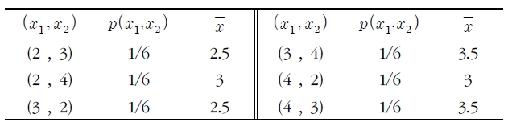
비복원추출 표본평균 \(\bar{X}\)의 표본평균

\[E(\bar{X})=2.5\frac{1}{3}+3\frac{1}{3}+3.5\frac{1}{3}=3=\mu\]
모집단의 확률분포와 \(n=2\)인 표본평균 \(\bar{X}\)의 표본분포
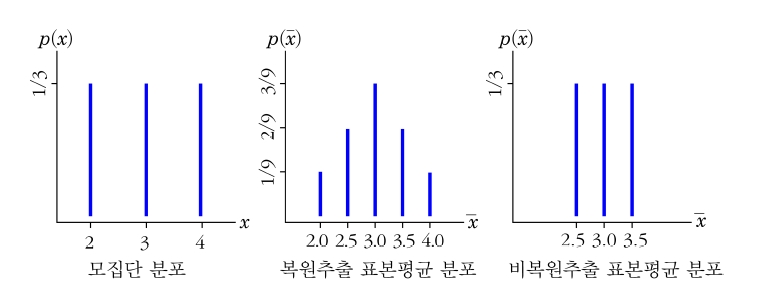
한 대형마트의 계산대에서 고객이 대기하는 시간은 모수 \(\lambda\)를 가지는 지수분포를 따른다고 하자. 어떤 무작위 두 명의 고객이 계산대에서 대기하는 시간을 각각 \(X_1, X_2\)(서로 독립)라고 하면 두 명의 총 대기시간(\(T_0=X_1+X_2\))을 구할 수 있는 누적분포함수를 구하라. 또 총 대기시간을 확률변수로 갖는 확률밀도함수와 평균 대기시간을 확률변수로 갖는 확률밀도함수를 구하라.
(풀이) 두 확률변수가 서로 독립이고 각각 지수분포를 따르므로 총 대기시간의 누적분포함수는 다음과 같다. \[\begin{aligned} F _{T _{o}} (t) & =P(X _{1} +X _{2} \le t)\\ &= \int\int _{\left\lbrace (x _{1}, x _{2} ):x _{1} +x _{2} \le t\right\rbrace } {f(x _{1}}, x _{2} )dx _{1} dx _{2}\\ &= \int _{0} ^{t} { \int _{0} ^{t-x _{1}} {\lambda e ^{- \lambda x _{1}}} \cdot \lambda e ^{- \lambda x _{2}}} dx _{2} dx _{1}\\ &= \int _{0} ^{t} {[ \lambda e ^{- \lambda x _{1}}} \cdot \lambda e ^{- \lambda t} ]dx _{1}\\ &=1-e ^{- \lambda t} - \lambda t e ^{- \lambda t}\end{aligned}\]
\(T_0\)의 누적분포를 구하기 위한 영역
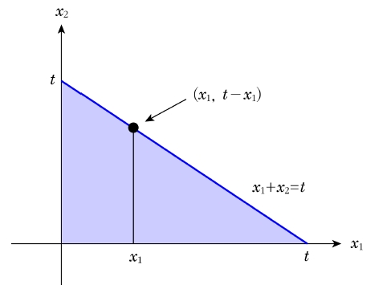
\(T_0\)의 누적분포함수를 미분하면 총 대기시간의 확률밀도함수를 구할 수 있음 \[f_{T_0} (t)=\begin{cases} \lambda^2 t e^{-\lambda t}, \hskip5pt t\ge 0\\ 0, \hskip5pt t<0 \end{cases}\]
평균 대기시간은 \(P(\bar{X}\le \bar{x})\)가 누적분포함수이고 \(\bar{X}=T_0/2\)이므로 \(T_0 \le 2\bar{x}\)를 계산하면 평균 대기시간의 누적분포함수를 구할 수 있다. \[\begin{aligned} F _{\bar{X}} (\bar{x}) & =P(X _{1} +X _{2} \le 2\bar{x})\\ &= \int\int _{\left\lbrace (x _{1}, x _{2} ):x _{1} +x _{2} \le 2\bar{x}\right\rbrace } {f(x _{1}}, x _{2} )dx _{1} dx _{2}\\ &= \int _{0} ^{2\bar{x}} { \int _{0} ^{2\bar{x}-x _{1}} {\lambda e ^{- \lambda x _{1}}} \cdot \lambda e ^{- \lambda x _{2}}} dx _{2} dx _{1}\\ &= \int _{0} ^{2\bar{x}} {[ \lambda e ^{- \lambda x _{1}}} \cdot \lambda e ^{- \lambda 2\bar{x}} ]dx _{1}\\ &=1-e ^{-2 \lambda \bar{x}} - 2\lambda \bar{x} e ^{- 2\lambda \bar{x}}\end{aligned}\]
평균 대기시간의 누적분포함수를 \(\bar{x}\)에 대해 미분하면 평균 대기시간의 확률밀도함수를 구할 수 있음 \[f_{\bar{X}} (\bar{x})=\begin{cases} 4\lambda^2 \bar{x} e^{-2\lambda \bar{x}}, \hskip5pt \bar{x}\ge 0\\ 0, \hskip5pt \bar{x}<0 \end{cases}\]
7.3 중심극한정리와 대수의 법칙
7.3.1 모집단이 정규분포를 따를 때
모평균이 \(\mu\)이고 분산이 \(\sigma^2\)인 정규분포를 따르는 모집단으로부터 무작위추출에 의해 표본을 선택했을 경우 각 확률표본 \(X_1, X_2, \ldots, X_n\)은 확률표본의 정의에 의해 평균이 \(\mu\)이고 분산이 \(\sigma^2\)인 정규분포를 따름
표본평균 \(\bar{X}\)의 분포는 \(X_1, X_2, \ldots, X_n\)의 선형결합으로 이루어져 있으므로 평균은 \(\mu\)이고 분산은 \(\sigma^2/n\)인 정규분포를 따름
평균이 \(0\), 표준편차가 \(5\)인 정규분포를 따르는 모집단으로부터 표본크기가 \(n\)인 표본을 무작위 추출했을 경우 다음 표본의 개수 각각에 대해 표본평균 \(\bar{X}_n\)의 표본분포를 구하라.
- \(n=5 \hskip10pt\) b) \(n=10 \hskip10pt\) c) \(n=30\)
(풀이) 모집단이 정규분포를 따르므로 \(\bar{X}_n\)의 표본분포는 정규분포를 따르며 이 정규분포의 모수인 \(\mu_{\bar{X}}\)와 \(\sigma_{\bar{X}}\)는 다음과 같다. \[\mu_{\bar{X}}=0\] \[\sigma_{\bar{X}}= 5/\sqrt{5}, \hskip5pt 5/\sqrt{10}, \hskip5pt 5/\sqrt{30}\]
모집단의 분포와 \(n=5, 10, 30\)인 경우 \(\bar{X}_n\)의 표본분포
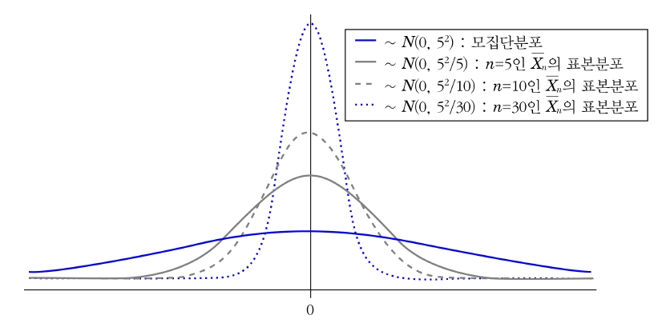
7.3.2 모집단이 정규분포를 따르지 않을 때
만약 모집단이 정규분포를 따르지 않는다면 표본평균 \(\bar{X}\)의 분포는 정확히 정의할 수 없음
그러나 표본크기 \(n\)이 충분히 크다면 모집단의 분포와 상관없이 표본평균의 분포는 근사적으로 정규분포를 따르게 됨. 이러한 성질을 중심극한정리(central limit theorem)라고 함
모집단의 분포가 정규분포가 아니거나 또는 그 분포를 전혀 알 수 없는 경우에도 표본크기만 적당히 크다면 중심극한정리에 의해 모집단의 특성을 규명하는데 정규분포를 이용할 수 있음
중심극한정리 표본크기 \(n\)의 확률표본 \(X_1, X_2, \ldots, X_n\)의 기대값과 분산이 각각 \(E(X_i)=\mu\), \(Var(X_i)=\sigma^2\)일 때, \(X_1, X_2, \ldots, X_n\)의 선형결합(linear combination)으로 이루어진 \(\bar{X}_n\)의 통계량의 분포는 모집단의 분포에 상관없이 \(n\)이 커짐에 따라 \(N(\mu,\sigma^2/n)\)인 정규분포를 따르게 된다.
\(n\)이 커짐에 따라 \(\bar{X}_n\)의 표준오차가 줄어들어 \(\bar{X}_n\)의 표본분포는 \(\mu\)에 더 가까워지고 그 분포는 모집단의 분포에 상관없이 \(N(\mu, \sigma^2/n)\)에 근사
중심극한정리는 모집단의 분포와 관계없이 항상 성립하기 때문에 매우 유용함
표본크기가 충분히 크지 않으면 적용이 곤람함. 경험적으로 \(n\ge 30\)이면 표본크기가 충분하다고 판단됨
각 분포에 대한 표본평균(\(\bar{X}_n\))의 분포
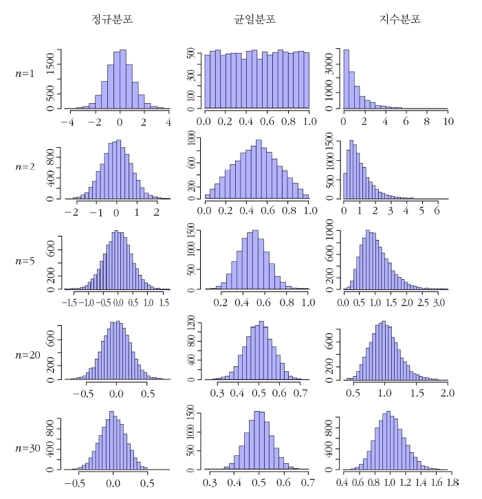
모집단의 분포 \(f_X(x)\)와 표본평균의 분포 \(f_{\bar{X}}(\bar{x})\)
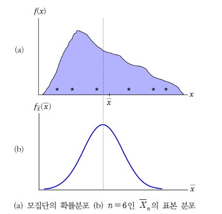
통계학 강의를 수강하는 학생을 대상으로 통계학 시험을 본 결과 통계학 성적은 평균이 63점이고 분산이 25인 정규분포를 따른다고 하자. 다음 물음에 답하라.
a) 무직위로 추출된 한 학생이 65점 이상일 확률을 구하라.
b) 30명의 학생을 무작위 추출하였을 때 이 표본의 평균이 65점 이상일 확률을 구하라.
c) 만일 통계학 성적의 분포가 정규분포를 따르지 않을 경우에 대해 b)에 답하라.
(풀이)
a) \[P(X\ge65)=P(Z\ge \frac{65-63}{5})=P(Z\ge\frac{2}{5})=0.345\]
b) 모집단이 정규분포 \(N(63,5^2)\)을 따를 때, \(n=30\)인 표본평균 \(\bar{X}_n\)의 분포는 정규분포 \(N(63,25/30)\)을 따른다. 따라서 구하고자 하는 확률은 \(P(\bar{X}\ge65)\)이므로 이를 표준화시키면 다음과 같다. \[z=\frac{\bar{x}-\mu}{\sigma/\sqrt{n}}=\frac{65-63}{5/\sqrt{30}}\approx 2.19\]
따라서 \(P(\bar{X}\ge65)=P(Z\ge2.19)=0.0143\)이다.
c) 모집단이 정규분포를 따르지 않더라도 표본크기 \(n\)이 \(30\)으로 충분히 크므로 중심극한정리를 적용하면 표본평균의 분포는 정규분포를 따르므로 b)의 결과와 동일하다.
모집단의 확률분포 \(f_X(x)\)와 표본평균의 분포 \(f_{\bar{X}}(\bar{x})\)
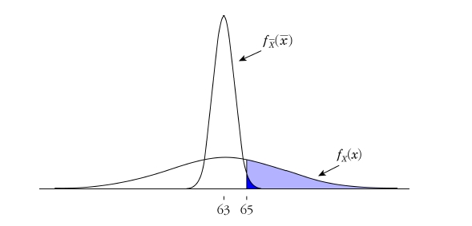
7.3.3 대수의 법칙
표본크기가 커짐에 따라 모평균에 가까운 표본평균을 얻을 확률이 커지는 반면, 모평균과 극단적으로 떨어진 표본평균을 얻을 확률은 작아진다. 이러한 법칙을 대수의 법칙(law of large numbers)이라고 함
\[정리 7.3\] 대수의 약법칙(week law of large numbers) \(X_1, X_2, \ldots, X_n\)이 평균 \(\mu\), 유한한 분산 \(\sigma^2\)을 갖는 분포로부터 추출된 확률표본일 때, 어떠한 \(\epsilon(>0)\)에 대해 다음이 성립한다. \[\lim\limits_{n\rightarrow \infty}P(|\bar{X}_n -\mu|<\epsilon)=1\]
(증명) 체비셰프 부등식(Chebyshev inequality)을 이용하면, \[P(|X-\mu|<k\sigma)\ge 1-\frac{1}{k^2}\]
\(\bar{X}_n\)을 평균이 \(\mu\)이고, 분산이 \(\sigma^2\)인 분포로부터 추출된 표본크기 \(n\)인 확률표본의 평균이라고 하자. 이를 표본평균 \(\bar{X}_n\)에 적용시켜 보면 다음과 같이 된다. 임의의 상수 \(\epsilon>0\)에 대해서 \[P(|\bar{X}-\mu|<k\sigma/\sqrt{n})\ge 1-\frac{1}{k^2}\]
이때 \(\epsilon=k\sigma/\sqrt{n}\)이라 놓으면, \(P(|\bar{X}-\mu|<\epsilon)\ge 1-\frac{\sigma^2}{n\epsilon^2}\)이 되므로 \(\lim\limits_{n\rightarrow \infty}P(|\bar{X}-\mu|<\epsilon)=1\) 또는 \(\lim\limits_{n\rightarrow \infty}P(|\bar{X}-\mu|\ge \epsilon)=0\)이 성립한다.
이는 \(\bar{X}_n \rightarrow^P \mu\)로 표기하며 \(\rightarrow^P\)를 확률적으로 수렴(converge in probability)이라고 한다. 즉, \(\sigma^2\)이 유한할 경우 \(\bar{X}_n\), \(n=1,2,\ldots\)는 \(\mu\)로 확률적으로 수렴한다. 이를 대수의 약법칙이라 한다.
어떤 모집단의 분포가 평균은 알려져 있지 않고 분산이 \(2\)라고 한다. 표본평균 \(\bar{X}\)가 모평균으로부터 \(0.5\)이내에 존재할 확률을 최소 \(95\%\)로 하려고 할 때 표본크기 \(n\)의 최소크기를 구하라.
(풀이) \(\epsilon=0.5\)이고 \(\sigma^2=2\)이므로 \(P(|\bar{X}-\mu|<0.5)\ge 0.95\)를 만족하는 표본크기 \(n\)을 구해야 하므로 대수의 법칙을 이용하면 다음과 같이 정리된다. \[P(|\bar{X}-\mu|<\epsilon)\ge 1-\frac{\sigma^2}{n\epsilon^2}\]
위 식을 만족하는 표본크기 \(n\)은 다음과 같다. \[1-\frac{\sigma^2}{n\epsilon^2}=1-\frac{2}{0.5^2n}\ge 0.95\]
따라서 \(n\ge 2/(0.5^2\cdot 0.05)=160\) 이므로 표본평균이 모평균으로부터 \(0.5\)이내에 존재할 확률이 최소 \(95\%\)가 되기 위한 최소 표본크기는 \(160\)이다.
7.3.4 확률변수의 선형결합의 분포
\(n\)개의 확률변수 \(X_1, X_2, \ldots, X_n\)과 \(n\)개의 상수 \(a_1, \ldots, a_n\)이 주어질 때, 확률변수 \(Y=a_1X_1+\cdots+a_nX_n=\sum_{i=1}^{n}a_iX_i\)는 \(X_i\)의 선형결합이라 불린다.
- 정의 7.4에서 \(a_1=a_2=\cdots=a_n=1\)이면 \(Y=X_1+\cdots +X_n=\sum_{i=1}^{n}X_i\)로 표본총합을 의미하고, \(a_1=\cdots=a_n=1/n\)이면 \(Y=\frac{1}{n}\sum_{i=1}^{n}X_i=\bar{X}\)로 표본평균을 의미
\(X_1, X_2, \ldots, X_n\)은 상호독립이고 각각 개별적인 정규분포를 따른다면(서로 다른 평균과 분산을 갖는다는 것을 의미) \(X_i\)의 선형결합도 정규분포를 따른다. 특히 정규분포를 따르는 서로 독립인 두 변수의 차(\(X_1-X_2\)) 역시 정규분포를 따른다.
\(X_1, X_2, \ldots, X_n\)는 각각 평균 \(\mu_1, \ldots, \mu_n\)을 갖고 각각 분산 \(\sigma_1^2, \ldots, \sigma_n^2\)을 갖는다고 하면,
\(X_i\)가 상호독립 여부에 관계없이 다음이 성립한다. \[E(a_1X_1+a_2X_2+\cdots+a_nX_n)=a_1 E(X_1)+a_2E(X_2)+\cdots +a_nE(X_n)=a_1\mu_1+\cdots +a_n\mu_n\] \[Var(a_1X_1+\cdots +a_nX_n)=\sum_{i=1}^n\sum_{j=1}^n a_i a_j Cov(X_i,X_j)\]
\(X_1, X_2, \ldots, X_n\)이 상호독립이면 다음이 성립한다. \[\begin{aligned} &Var(a_1X_1+\cdots +a_nX_n)\\ &=a_1^2Var(X_1)+a_2^2Var(X_2)+\cdots +a_n^2Var(X_n)\\ &=a_1^2\sigma_1^2+\cdots +a_n^2\sigma_n^2\end{aligned}\] \[\sigma_{a_1X_1+\cdots +a_nX_n}=\sqrt{a_1^2\sigma_1^2 +\cdots +a_n^2\sigma_n^2}\]
7.4 정규분포에서 추출된 표본분포
7.4.1 표본평균
평균 \(\mu\)이고 분산이 \(\sigma^2\)인 정규분포로부터 크기 \(n\)의 확률표본을 추출하여 얻은 표본평균 \(\bar{x}_n\)는 평균이 \(\mu\)이고 분산이 \(\sigma^2/n\)인 정규분포를 따른다.
(증명) 적률생성함수 기법을 이용하면, \[\begin{aligned} m_{\bar{X}_n}(t)&=E[exp(t\bar{X}_n)]=E[exp(t\sum_{i=1}^{n} X_i/n)]=E[\prod_{i=1}^{n}exp(tX_i/n)]=\prod_{i=1}^{n}E[exp(tX_i/n)]\\ &= \prod_{i=1}^{n}m_{X_i}(\frac{t}{n})=\prod_{i=1}^{n}exp[\mu t/n +\sigma^2(t/n)^2/2]=exp[\mu t+\sigma^2t^2/(2n)]\end{aligned}\]
이 결과는 평균이 \(\mu\)이고 분산이 \(\sigma^2/n\)인 정규분포의 적률 생성 함수이다.
7.4.2 카이제곱분포
다음과 같은 밀도함수를 갖는 \(X\)가 확률변수이면 \[f_X(x)=\frac{1}{\Gamma(k/2)}\left( \frac{1}{2}\right)^{k/2}x^{k/2-1}e^{-\frac{1}{2}x^2}, \hskip5pt 0<x<\infty\] 모수인 자유도 \(k\)가 양의 정수일 때 \(X\)는 자유도가 \(k\)인 카이제곱분포를 따른다.
- 카이제곱분포는 두 모수 \(r=k/2\), \(\lambda=1/2\)를 갖는 감마분포의 특별한 경우. 따라서 확률변수 \(X\)가 카이제곱분포를 따르면 평균, 분산, 적률생성함수를 다음과 같이 쉽게 구할 수 있음 \[E(X)=\frac{k/2}{1/2}=k, \hskip10pt Var(X)=\frac{k/2}{(1/2)^2}=2k, \hskip10pt m_X(t)=\left[ \frac{1}{1-2t} \right]^{k/2},\hskip5pt t<1/2\]
확률변수 \(X_i\), \(i=1,2, \ldots, k\)가 평균 \(\mu_i\), 분산 \(\sigma_i^2\)인 정규분포를 따르고 상호 독립일 때 \[U=\sum_{i=1}^k \left( \frac{X_i -\mu_i}{\sigma_i}\right)^2\] 은 자유도가 \(k\)인 카이제곱분포를 따른다.
(증명) \(Z_i=(X_i-\mu_i)/\sigma_i\)로 표준화했기 때문에 \(Z_i\)는 표준정규분포를 따른다. \[m_U(t)=E[e^{tU}]=E[e^{t\sum Z_i^2}]=E[\prod e^{tZ_i^2}]=\prod_{i=1}^n E[e^{tZ_i^2}]\]
곱기호 내의 기대값을 정리하면 다음과 같다.
\[\begin{aligned} E[e^{tZ^2}]&=\int_{-\infty}^{\infty} e^{tz^2}\frac{1}{\sqrt{2\pi}}e^{-\frac{1}{2}z^2}dz\\ &=\int_{-\infty}^{\infty} \frac{1}{\sqrt{2\pi}}e^{-\frac{1}{2}(1-2t)z^2}dz\\ &=\frac{1}{\sqrt{1-2t}}\int_{-\infty}^{\infty}\frac{\sqrt{1-2t}}{\sqrt{2\pi}}e^{-\frac{1}{2}(1-2t)z^2}dz\\ &=\frac{1}{\sqrt{1-2t}}, \hskip5pt t<\frac{1}{2}\end{aligned}\]
- 따라서 \(U\)의 적률생성함수는 다음과 같이 정리되고 이는 자유도가 \(k\)인 카이제곱분포의 적률생성함수와 같다. \[\prod_{i=1}^{k} E[e^{tZ_i^2}]=\left(\frac{1}{1-2t} \right) ^{k/2}, \hskip5pt t<\frac{1}{2}\]
\(X_i, X_2, \ldots, X_n\)이 평균 \(\mu\), 분산 \(\sigma^2\)인 정규분포의 확률표본이면, \[U=\sum_{i=1}^n \left( \frac{X_i -\mu}{\sigma}\right)^2\] 은 자유도가 \(n\)인 카이제곱분포를 따른다.
\(\mu\) 또는 \(\sigma^2\)이 알려지지 않았다면 \(U\)는 통계량이 아님
표준정규분포를 따르는 상호독립인 확률변수의 제곱합은 합에서의 항의 수와 같은 자유도를 갖는 카이제곱분포를 따름
\(Z_1, Z_2, \ldots, Z_n\)이 표준정규분포로부터의 확률표본이면
\(\bar{Z}\)는 평균이 \(0\)이고 분산 \(1/n\)을 갖는 정규분포를 따른다.
\(\bar{Z}\)와 \(\sum_{i=1}^n (Z_i -\bar{Z})^2\)는 독립이다.
\(\sum_{i=1}^n (Z_i -\bar{Z})^2\)는 자유도가 \(n-1\)인 카이제곱 분포를 따른다.
\(S^2=\frac{1}{n-1}\sum_{i=1}^n (X_i-\bar{X})^2\)이 평균이 \(\mu\), 분산이 \(\sigma^2\)인 정규분포로부터 추출된 확률표본의 표본분산이면 \[U=\frac{(n-1)S^2}{\sigma^2}\] 은 자유도가 \(n-1\)인 카이제곱분포를 따른다.
7.4.3 \(F\)분포
\(F\)분포는 카이제곱분포를 따르는 2개의 확률변수를 각각의 자유도로 나눈 2개의 독립적인 확률변수의 비에 대한 분포
서로 독립인 \(U\)와 \(V\)가 자유도가 각각 \(m\)과 \(n\)인 카이제곱분포를 따른다고 하면 결합확률밀도함수는 다음과 같이 정의 \[f(u,v)= \frac{1}{\Gamma(m/2)\Gamma(n/2)2^{(m+n)/2}}u^{(m-2)/2}v^{(n-2)/2}e^{-\frac{1}{2}(u+v)}, \hskip5pt 0<u<\infty, \hskip5pt 0<v<\infty\]
\(X=\frac{U/m}{V/n}\), \(Y=V\)라고 치환하면 다음과 같은 \(X, Y\)의 결합확률밀도함수를 구할 수 있고 이를 \(Y\)에 대해 적분하여 \(X\)의 주변확률밀도함수를 구할 수 있음 \[f(x,y)= \frac{m}{n}y\frac{1}{\Gamma(m/2)\Gamma(n/2)2^{(m+n)/2}}(\frac{m}{n}xy)^{(m-2)/2}y^{(n-2)/2}e^{-\frac{1}{2}(m/n)xy+y}\]
\[\begin{aligned} f_X(x)&=\int_0^{\infty} f(x,y)dy\\ &=\frac{1}{\Gamma(m/2)\Gamma(n/2)2^{(m+n)/2}}(\frac{m}{n})^{(m)/2}x^{(m-2)/2}\int_0^{\infty}y^{(m+n-2)/2}e^{-\frac{1}{2}[(m/n)x+1]y}\\ &= \frac{\Gamma((m+n)/2}{\Gamma(m/2)\Gamma(n/2)}(\frac{m}{n})^{m/2}\frac{x^{(m-2)/2}}{[1+(m/n)x]^{(m+n)/2}}, \hskip5pt 0<x<\infty\end{aligned}\]
서로 독립인 두 확률변수 \(U, V\)가 각각 자유도가 \(m, n\)인 카이제곱분포를 따른다면 \[X=\frac{U/m}{V/n}\] 는 자유도가 \(m, n\)인 \(F\)분포를 따른다.
자유도 \(m, n\)에 따른 \(F\)분포
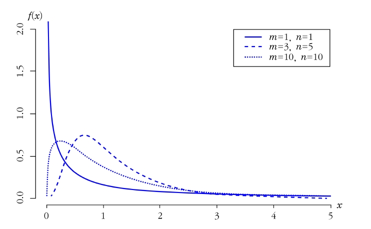
\(X_1, \ldots, X_{m+1}\)는 평균 \(\mu_X\)와 분산 \(\sigma^2\)을 갖는 정규분포로부터 추출된 크기 \(m+1\)의 확률변수이고, \(Y_1, \ldots, Y_{n+1}\)은 평균 \(\mu_Y\)와 분산 \(\sigma^2\)을 갖는 정규분포로부터 추출된 크기 \(n+1\)의 확률변수라고 하자. 두 표본들이 서로 독립이라면 \(\sum_{i=1}^{m+1}\frac{(X_i-\bar{X})}{\sigma^2}\)는 자유도가 \(m\)인 카이제곱분포를 따르고 \(\sum_{j=1}^{n+1}\frac{(Y_j-\bar{Y})}{\sigma^2}\)는 자유도가 \(n\)인 카이제곱분포를 따른다. 따라서 통계량 \[\frac{\sum_{i=1}^{m+1}(X_i-\bar{X})^2/m}{\sum_{j=1}^{n+1}(Y_j-\bar{Y})^2/n}\] 는 자유도가 \(m\)과 \(n\)인 \(F\)분포를 따른다.
확률변수 \(X\)가 자유도 \(m\)과 \(n\)을 갖는 \(F\)분포를 따른다면 확률변수 \(1/X\)는 자유도 \(n\)과 \(m\)을 갖는 \(F\)분포를 따름
\(X\)가 자유도 \(m\)과 \(n\)을 갖는 \(F\)분포의 확률변수이고 \(Y\)가 자유도 \(n\)과 \(m\)을 갖는 \(F\)분포의 확률변수라면 \(X\)의 \(p\)번째 백분위수 \(\xi_p\)는 \(Y\)의 \((1-p)\)번째 백분위수인 \(\xi'_{1-p}\)의 역수임 \[p=P(X\le \xi_p )=P[\frac{1}{X}\ge\frac{1}{\xi_p}]=P[Y\ge \frac{1}{\xi_p}]=1-P[Y<\frac{1}{\xi_p}]\]
동일한 방법으로 \(1-p=P[Y\le \xi'_{1-p}]\)이므로 두 관계식으로부터 \(\xi'_{1-p}=\frac{1}{\xi_p}\)임을 알 수 있음
통계적 추론에서 유용하게 사용되는 또 다른 분포는 표준정규분포를 따르는 확률변수와 카이제곱분포를 따르는 확률변수의 비에 대한 분포
\(Z\)가 표준정규분포의 확률변수이고 \(U\)가 자유도 \(k\)를 갖는 카이제곱분포의 확률변수이면서 서로 독립이라면 \(X=\frac{Z}{\sqrt{U/k}}\)의 분포를 찾을 수 있음
\(Z\)와 \(U\)의 결합 밀도는 \(0<u<\infty\)에 대해 다음과 같음 \[f(z,u)=\frac{1}{\sqrt{2\pi}}\frac{1}{\Gamma(k/2)}(\frac{1}{2})^{k/2}u^{(k/2)-1}e^{-\frac{1}{2}u}e^{-\frac{1}{2}z^2}\]
\(X=\frac{Z}{\sqrt{U/k}}\)와 \(Y=U\)로 치환하면 다음과 같은 \(X\), \(Y\)의 결합확률밀도함수를 구할 수 있고 이를 \(Y\)에 대해 적분하여 \(X\)의 주변확률밀도함수를 구할 수 있음 \[f(x,y)=\sqrt{\frac{y}{k}}\frac{1}{\sqrt{2\pi}}\frac{1}{\Gamma(k/2)}(\frac{1}{2})^{k/2}y^{(k/2)-1}e^{-\frac{1}{2}y}e^{-\frac{1}{2}x^2y/k},\hskip5pt 0<y<\infty\]
7.4.4 \(t\)분포
\[\begin{aligned} f_X(x)&=\int_{-\infty}^{\infty}f(x,y)dy\\ &= \frac{1}{\sqrt{2k\pi}}\frac{1}{\Gamma(k/2)}(\frac{1}{2})^{k/2}\int_{0}^{\infty}y^{(k/2)-1+\frac{1}{2}}e^{-\frac{1}{2}(1+x^2/k)y}dy\\ &=\frac{\Gamma((k+1)/2)}{\Gamma(k/2)}\frac{1}{\sqrt{k\pi}}\frac{1}{(1+x^2/k)^{(k+1)/2}}\end{aligned}\]
확률변수 \(X\)가 위의 \(f_X(x)\)의 확률밀도함수를 가지면 확률변수 \(X\)는 \(t\)분포를 갖는다고 정의되며, \(f_X(x)\)는 자유도 \(k\)인 \(t\)분포의 확률밀도함수라고 한다.
확률변수 \(Z\)는 표준정규분포를 따르고 \(U\)는 자유도가 \(k\)인 카이제곱분포를 따른다면 \[X=\frac{Z}{\sqrt{U/k}}\] 는 자유도가 \(k\)인 \(t\)분포를 따른다.
\(t\)분포는 자유도가 커짐에 따라 표준정규분포에 근접함
자유도가 \(k\)인 \(t\)분포를 따르는 확률변수의 제곱은 자유도가 \(1\)과 \(k\)인 \(F\)분포를 따르게 됨
\(X_1, \ldots, X_n\)이 평균 \(\mu\)와 분산 \(\sigma^2\)을 갖는 정규분포로부터 추출된 크기 \(n\)의 확률변수라면 \(\frac{\bar{X}-\mu}{\sigma/\sqrt{n}}\)는 표준정규분포를 따르고 \(\sum_{i=1}^n \frac{(X_i-\bar{X})^2}{\sigma^2}\)는 자유도가 \(n-1\)인 카이제곱분포를 따르며 두 확률변수는 서로 독립이다. 확률변수 \[\frac{(\bar{X}-\mu)/(\sigma/\sqrt{n})}{\sqrt{(1/\sigma^2)\sum_{i=1}^n (X_i-\bar{X})^2/(n-1)}}=\frac{\sqrt{n(n-1)}(\bar{X}-\mu)}{\sqrt{\sum_{i=1}^n (X_i-\bar{X})^2}}\] 는 자유도 \(n-1\)인 \(t\)분포를 따른다.
7.5 표본비율의 표본분포
모집단 비율 \(p\)에 대한 통계량으로 표본비율 \(\hat{p}\)를 사용하며 \(\hat{p}\)는 \(\bar{X}\)와 마찬가지로 표본마다 값이 변동하고 표본분포에 의해 설명됨
예를 들어 어느 회사에서 생산되는 전구의 불량률을 추론한다면 전체 전구 중 무작위 추출한 표본 중 불량품의 개수를 파악하여 전체 불량률 \(p\)를 추론하는데 표본에서 구해진 불량률을 표본비율 \(\hat{p}\)이라고 함
표본크기 \(n\)인 표본을 무작위 추출하여 관심이 있는 사건의 출현횟수를 \(Y\)라고 하면 표본비율은 다음과 같다. \[\hat{p}=\frac{Y}{n}=\frac{1}{n}\sum_{i=1}^n X_i, \hskip5pt X_i=\begin{cases} 1, \hskip5pt \text{성공일 때}\\ 0, \hskip5pt \text{실패일 때} \end{cases}\]
- 표본크기 \(n\)인 표본에서 관심이 있는 사건의 출현횟수를 \(Y\)라고 할 때 확률변수 \(Y\)는 모수가 \(n\)과 \(p\)인 이항분포를 따름. 이항분포를 따르는 확률변수 \(Y\)의 평균은 \(E(Y)=np\)이고 분산은 \(Var(Y)=np(1-p)\)이므로 표본비율 \(\hat{p}\)의 평균과 분산은 다음과 같음
표본비율 \(\hat{p}\)의 평균, 분산, 표준오차는 다음과 같다. \[E(\hat{p})=p,\hskip10pt Var(\hat{p})=\frac{p(1-p)}{n}, \hskip10pt \sigma(\hat{p})=\sqrt{\frac{p(1-p)}{n}}\]
(증명) \[E(\hat{p})=E(\frac{Y}{n})=\frac{1}{n}E(Y)=\frac{1}{n}np=p\] \[Var(\hat{p})=Var(\frac{Y}{n})=\frac{1}{n^2}Var(Y)=\frac{1}{n^2}(np(1-p))=\frac{p(1-p)}{n}\]
이항분포를 따르는 확률변수 \(Y\)는 \(n\)번 시행에서 성공의 횟수를 의미하고 이는 각 표본의 단위가 \(0\) 또는 \(1\)을 갖는 베르누이분포를 따르는 확률변수로 생각할 수 있으므로 \(n\)개 표본단위들의 합으로 표현 할 수 있음 \[X_i=\begin{cases} 1, \hskip5pt i\text{번째 시행에서 성공이 발생}\\ 0, \hskip5pt i\text{번째 시행에서 실패가 발생} \end{cases}\]
\(X_i\), \(i=1,\ldots, n\)들은 상호 독립이므로 \(Y=\sum_{i=1}^n X_i\)로 표현 가능. 따라서 표본크기 \(n\)인 표본비율 \(\hat{p}\)는 다음과 같이 표현할 수 있음 \[\hat{p}=\frac{Y}{n}=\frac{1}{n}\sum_{i=1}^n X_i = \bar{X}\]
표본비율의 표본분포는 표본평균의 표본분포와 동일한 특징을 가지며, 표본크기 \(n\)인 무작위 추출된 표본에서 표본비율 \(\hat{p}\)는 모집단의 비율 \(p\)를 중심으로 변동하며 표준오차는 \(\frac{p(1-p)}{n}\)
표본비율의 분포는 표본크기 \(n\)이 커짐에 따라 모집단 비율 \(p\)에 집중되며 중심극한정리에 의해 평균이 \(p\)이고 분산이 \(p(1-p)/n\)인 정규분포에 근사
어떤 공장에서 하루 생산량에 대한 불량률이 \(0.2\)라고 한다. 이 공장에서 하루 동안 생산된 제품 \(10\)개를 무작위로 추출했을 때 불량품이 \(4\)개를 초과해서 나올 확률을 다음에 제시한 방법을 이용하여 구하라.
a) 이항분포를 사용하여 정확한 확률을 구하라.
b) 이항분포의 정규근사를 사용하여 위의 확률을 구하라.
c) 표본비율의 정규근사를 이용하여 위의 확률을 구하라.
(풀이)
a) \(X\)를 하루 생산품 \(10\)개 중 불량품의 개수라고 하면 \(X\)는 \(n=10\), \(p=0.2\)인 이항분포를 따르는 확률변수가 된다. 따라서 우리가 구하고자 하는 확률은 다음과 같다. \[P(X>4)=P(X\ge 5)=\sum_{x=5}^{10} \binom{10}{x}(0.2)^x(0.8)^{10-x}=0.0333\]
b) 이항분포를 따르는 확률변수 \(X\)에 대해 정규근사시킨 확률을 구해보면 다음과 같다.
연속성 수정을 할 경우 \[P(X>4)\approx P(X\ge 4.5)=P(Z\ge \frac{4.5-10(0.2)}{\sqrt{10(0.2)(0.8)}})=P(Z\ge 1.98)=0.024\]
연속성 수정을 하지 않을 경우 \[P(X>4)= P(X\ge 5)\approx P(Z\ge \frac{5-10(0.2)}{\sqrt{10(0.2)(0.8)}})=P(Z\ge 2.37)=0.0089\]
c) 모비율 \(p=0.2\)이고 \(n=10\)이므로 표본비율 \(\hat{p}\sim N(0.2,0.016)\)인 정규분포에 근사한다. 따라서 정규근사시킨 확률을 구해보면 다음과 같다.
연속성 수정을 할 경우 \[P(\hat{p}>\frac{4}{10})\approx P(\hat{p}\ge \frac{4.5}{10})=P(Z\ge \frac{\frac{4.5}{10}-0.2}{\sqrt{(0.2)(0.8)/10}})=P(Z\ge 1.98)=0.024\]
연속성 수정을 하지 않을 경우 \[P(\hat{p}>0.4)= P(\hat{p}\ge 0.5)\approx P(Z\ge \frac{0.5-0.2}{\sqrt{(0.2)(0.8)/10}})=P(Z\ge 2.37)=0.0089\]